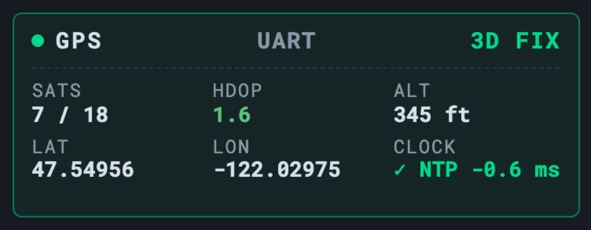

The Dashboard
GPS / GNSS Card
Live fix quality in the dashboard header

When a GPS receiver is attached and GPS time sync is set up, the dashboard header shows a live GPS card reporting the current fix — so you can confirm position and clock discipline at a glance before a net.
| Field | Meaning |
|---|---|
| Fix mode | 3D / 2D / no-fix |
| Satellites | Number of satellites used in the solution |
| HDOP | Horizontal dilution of precision — colour-coded (lower is better) |
| Altitude | Height above the ellipsoid, in your chosen units |
| Lat / Lon | Current position |
| Clock lock | Whether chrony is disciplining the system clock from GPS |
✓
An accurate GPS-disciplined clock is what makes offline FT8 / FT4 / WSPR / SSTV decode correctly with no internet NTP. Pair GPS with a hardware RTC so time survives a power loss before the first fix.
Troubleshooting
| Symptom | Cause & fix |
|---|---|
| NO FIX that never clears | The antenna needs a clear view of the sky, and a cold start can take minutes. Check the daemon: systemctl status gpsd, then cgps or gpsmon for live satellites. |
CLOCK shows NTP-locked but GPS is n/a | Normal — chrony is disciplined by the RTC or last-known time while GPS is still acquiring. See GPS Time & RTC. |
| SATS 0 / UART vs USB confusion | Wrong device or wiring. The L76X hat is on the serial UART, a USB puck on /dev/ttyACM* — set the right one and check the cable/antenna. |
OASIS · off-grid amateur station information suite